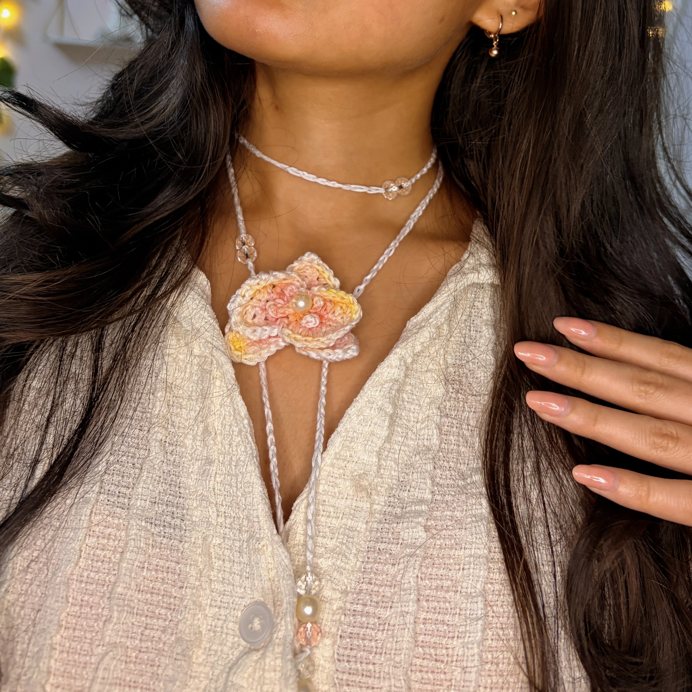
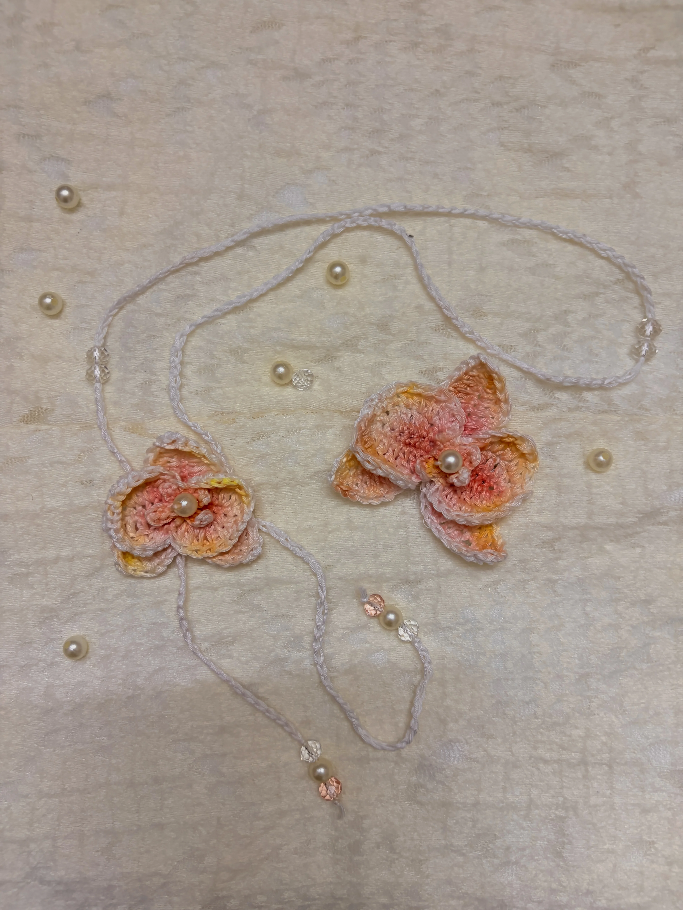

Free Crochet Pattern
Crochet Orchid Flower Accessories Tutorial: Necklace & Hair Clip
If you love floral accessories and all things summer, you’re going to love these crochet orchid flowers! With their pretty layered petals and tiny bead in the centre, they make such a lovely accessory for sunny days, beach holidays, and summer vacations. You can turn them into a delicate flower necklace or a matching hair clip, so you have two cute ways to wear them.
I love how you can customise these little flowers to match your own style. Try different yarn colours, add a touch of pink or peach shading to the petals, or keep them simple and let the flower speak for itself. Whether you’re dressing up for a vacation, heading to the beach, or just want to add a little floral touch to your everyday outfit, these crochet orchids are perfect for bringing those summer vibes!

About the Pattern
This crochet orchid pattern is beginner-friendly and makes a lovely little project for summer! I’m using fine cotton yarn to create delicate flowers, but if you’re new to crochet, you can absolutely use medium-weight yarn instead. It’s easier to handle, and your stitches will be easier to see while you’re learning.
In this tutorial, I’ll show you two versions of the flower: a smaller one that’s perfect for a necklace and a larger one that works beautifully as a hair clip. You can choose whichever version you like, or make both to create a matching set!
The best part is that each flower takes around 30 minutes to make, so it’s a quick and fun project when you want to create something cute without spending hours on it. Pick your favourite colours, grab your hook, and let’s make some pretty crochet orchids for those sunny summer days!
Video Tutorial
Want to crochet along with me? Watch the full video tutorial below, where I show you how to make both versions of the crochet orchid flower, from the individual petals to the final assembly. I’ll also show you how to add the little bead in the centre and turn your flowers into a necklace or a hair clip.
You can pause the video whenever you need a closer look at a stitch or want to catch up. If you’re a beginner, don’t worry about getting everything perfect on your first try. Take your time, follow along, and have fun making your own little floral accessories!
Materials
- Weight 2 fine cotton yarn (or lightweight yarn)
- Crochet hook suitable for your yarn (2.5–3 mm works well)
- Pearls or beads for the flower center
- Glass beads for necklace details
- Pink, peach, or yellow eyeshadow/blush for shading
- Needle and thread or hot glue
- Scissors
- Stitch marker
Want to shop the materials?
Check out the materials here →Abbreviations
Written Pattern
How to Crochet the Orchid Accessories
1. Crochet Orchid Necklace
This necklace uses a smaller orchid flower for a soft and delicate accessory perfect for spring and summer.
Base Petals — Make 3
Foundation: In a magic ring, ch 9, make 8 sc back down the chain, slst into the ring. Repeat 3 times.
Shaping: ch 1, sc, hdc, 4 dc, hdc, sc, then repeat on the opposite side of the petal.
Finish with a slst and leave a long tail for sewing.
Inner Petals — Make 2
Foundation: In a magic ring, ch 7, make 6 sc, slst into the ring. Repeat once.
Round 1: ch 1, sc, hdc, 2 dc, hdc, sc, then repeat on the opposite side.
Round 2: dc inc, dc inc, dc, hdc, sc, ch 2, then reverse the pattern back.
Top Mini Petals
Round 1: In a magic ring, (ch 4, 3 sc, slst) ×2, then (ch 3, 2 sc, slst) ×2.
Tighten the ring and fasten off.
2. Necklace Assembly & Shading
Sew or glue all petals together and add a pearl or bead in the center.
Lightly shade the petals using pink, peach, or yellow blush or eyeshadow for a realistic orchid effect.
Necklace Assembly
Attach the orchid to a crochet chain, cord, or choker and add beads to the ends for extra detail.
3. Crochet Orchid Hair Clip
This version uses a larger orchid flower for a bold floral hair accessory.
Base Petals — Make 3
Foundation: In a magic ring, ch 11, make 10 sc back down the chain, slst into the ring. Repeat 3 times.
Shaping: ch 1, sc, 2 hdc, 4 dc, 2 hdc, sc, then repeat on the opposite side.
Finish with a slst and leave a long tail.
Inner Petals — Make 2
Foundation: In a magic ring, ch 9, make 8 sc, slst into the ring. Repeat once.
Round 1: ch 1, (1 sc, 1 hdc, 4 dc, 1 hdc, 1 sc) ×4.
Round 2: ch 1, (2 slst, 3 dc inc, 1 dc, 1 hdc, 1 sc, 2 ch, 1 sc, 1 hdc, 1 dc, 3 dc inc, 2 slst) ×2.
Top Mini Petals
Round 1: (4 ch, 3 sc, slst into MR) ×2, then (3 ch, 2 sc, slst) ×2.
Tighten the ring and fasten off.
4. Hair Clip Assembly & Shading
Attach all petals together and add a pearl or bead in the center.
Use blush or eyeshadow for soft pink, peach, or yellow shading.
Hair Clip Assembly
Glue the orchid onto a metal hair clip.
5. Style Tip
These orchid accessories look beautiful as a matching set! Try experimenting with pastel shades and different center beads for unique floral looks.
A Little Note from Stitchy Days ♡
Hi there!
Thank you so much for trying one of my crochet patterns! I’m so happy to have you here, and I hope you enjoy making this project as much as I enjoyed creating it.
If you make something using this pattern, I’d love to see it! Feel free to tag Stitchy Days when you share your finished project. Seeing your creations means so much to me as I continue growing this little crochet corner.
Thank you for supporting my work and happy crocheting! ♡
